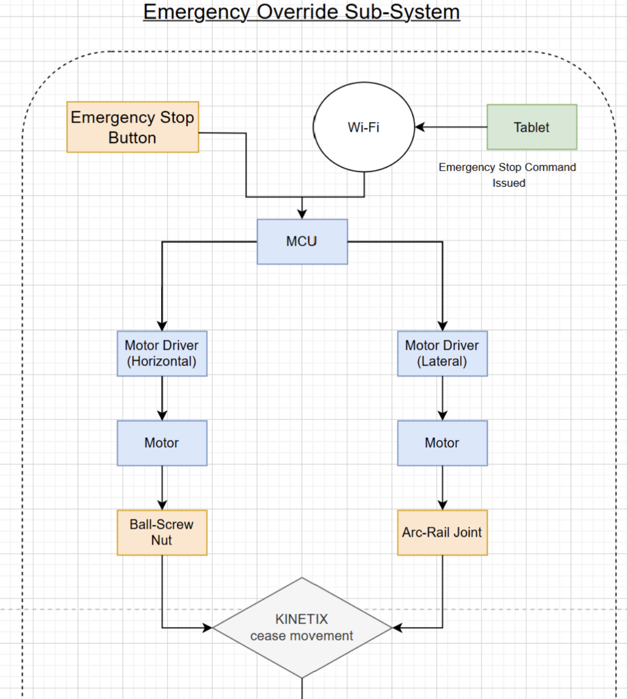

CDE4301 – Kinetix
5. Proposed System Overview
5.1 Concept Overview Final Sketch (Foldable with sensors labelled)
The sketches below show the proposed design for Kinetix. The first sketch provides an overview of the main components while the second sketch shows the placement of sensors and the connections, along with the tablet user interface.
5.2 System Block Diagram
Figure 37 shows the operation flow of the KINETIX once it is turned on where the ball footrest will be placed at its starting location where the knee is in full flexion position. The device will then wait for any commands issued onto the tablet before proceeding.

When passive mode is selected, the device will move the footrest along the screwbar during horizontal movement and along the arc-rail during lateral movement as seen in Figure 38. Moreover, an ultrasonic sensor is used for horizontal movement to detect the location of the footrest along the screwbar.

Meanwhile, for active mode, the only difference it has compared to its counterpart is the addition of force and IMU sensors in Figure 39. The force sensors are used to control the resistance of the footrest by creating a force threshold that the user will need to overcome in order to move the device, while also storing the amount of force that the user exert to adjust future exercise difficulty levels and provide physiotherapist a way to track the user’s progress. Meanwhile, the IMU sensor is mostly used to keep track of the user’s range of motion that will also aid in tracking the user’s rehabilitation progress.
The following figure demonstrates the KINETIX emergency override system where upon a press of the emergency stop button, the device will cease its movement immediately, and allow the user to stop the exercise and dismount from the device. To reset the device, the physiotherapist will use the tablet to recalibrate the footrest back to its starting position and allow for a new exercise session to begin.
